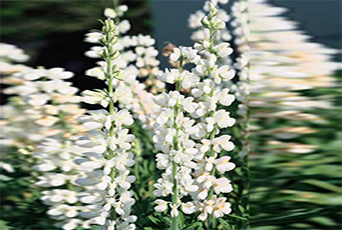

Specie: Lupinus albus
Taxonomy: Fabaceae; Papilionoideae; 50 kb inversion clade; genistoids sensu lato; core genistoids; Genisteae; Lupinus
Abbr: Lal
Level: Chromosome
chromosome number: 2n=2X=50

Introduction: Lupinus albus, commonly known as the white lupin or field lupine, is a member of the genus Lupinus in the family Fabaceae. It is a traditional pulse cultivated in the Mediterranean region. The white lupin is annual, more or less pubescent plant, 30 to 120 cm high, has a wide distribution in the Mediterranean region. White lupine is widely spread as wild plants throughout the southern Balkans, the Italian mainland region of Apulia, the islands of Sicily, Corsica, and Sardinia, and the Aegean Sea, as well as in Lebanon, Israel, Palestine, and western Anatolia. It occurs in meadows, pastures, and grassy slopes, predominantly on sandy and acid soils. It is cultivated over all the Mediterranean region and also in Egypt, Sudan, Ethiopia, Syria, Central and Western Europe, USA and South America, Tropical and Southern Africa, Russia, and Ukraine. The ancient culture of white lupin under the local name "hanchcoly" was practiced until recently in Western Georgia. White lupin is distinct within the vast and polymorphous genus Lupinus L. for small variation of morphological characters. However, it has wide intraspecific variability in physiological plant properties: duration of vernalization time and growth rate, photoperiodic sensitivity, shape tolerance, drought resistance, cold- and winter-hardiness. There are winter and spring forms of white lupin. Duration of growing period under spring sowing varies from 106 to 180 days, seed mass per plant changes from 2.2 to 40 g, green mass yield per from 9 to 250 g, protein content in seed from 35.0 to 53.7%, and oil content from 6.2 to 12.0%.
Distribution: Albania, Bulgaria, East Aegean Is., Greece, Kriti, Sicilia, Turkey, Turkey-in-Europe, Yugoslavia
Article Title: The genome evolution and low-phosphorus adaptation in white lupin
Data source: All the genome and annotation datasets of white lupin were deposited to the NCBI BioProject database under accession PRJNA592024. The assembled genome sequences of white lupin have been deposited at DDBJ/ENA/GenBank under the accession JAAEJY000000000. The version described in this paper is version JAAEJY010000000. The white lupin genome datasets are also freely available through http://brassicadb.org/brad/pub/genomes/Lalbus/.